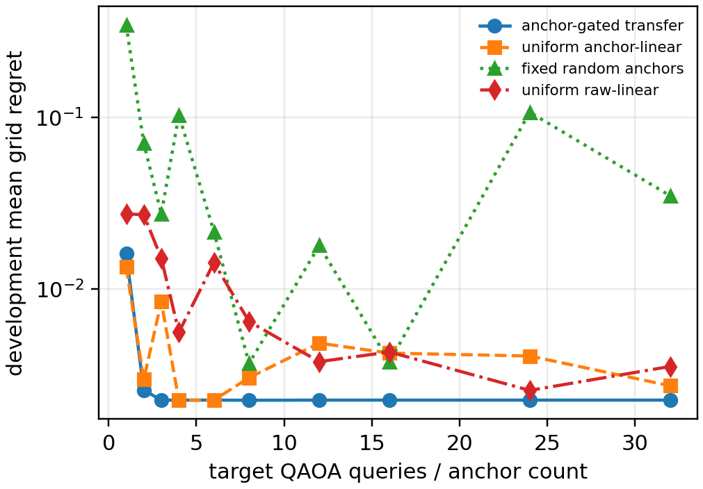
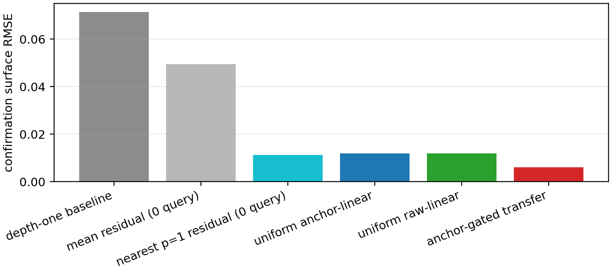
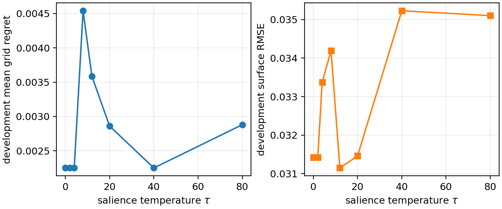
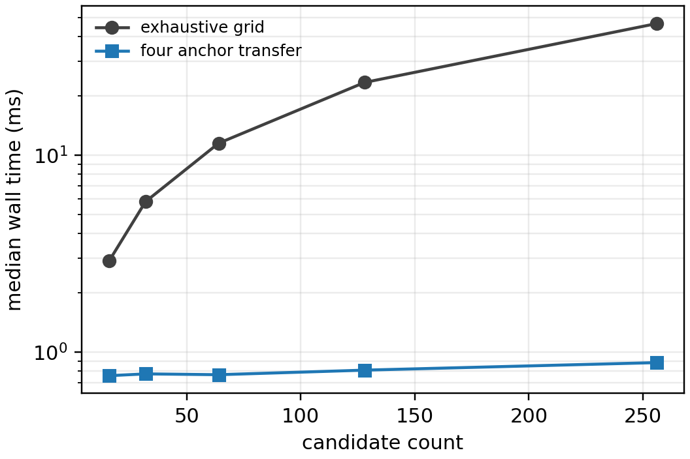

What was tested
16
checksum-pinned Stanford Gset source files128
derived ten-vertex tasks, split by whole source256
depth-two candidates per taskThe candidate subtracts the established exact depth-one expectation, chooses four residual columns by uniform pivoted QR, and transfers the training residual nearest to the four measured target residuals. A salience temperature of 2 was rejected as a floating-point tie artifact; the frozen temperature is 0.
The decisive comparison
Nearest p=1 residual
0 queries · 0 regret · RMSE 0.011280
0 queries · 0 regret · RMSE 0.011280
Anchor-linear residual
4 queries · 0 regret · RMSE 0.011811
4 queries · 0 regret · RMSE 0.011811
Anchor-gated residual
4 queries · 0 regret · RMSE 0.006095
4 queries · 0 regret · RMSE 0.006095
All figures are descriptive for only two held-out source files (16 derived tasks). They do not show quantum advantage, hardware performance, continuous-angle optimality, or out-of-family generalization.
Quantitative evidence




Verify without overwriting
python -m pip install ./code
qaoa-anchor-reproduce --cache-dir /path/to/gset-cache --verify
python -m pytest -q code/tests
python code/scripts/validate_release.pyWall-time evidence is host-specific and generated separately with
qaoa-anchor-benchmark.